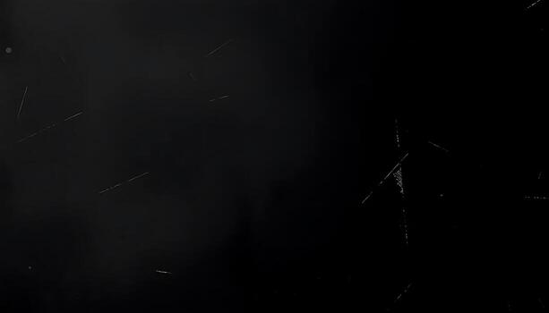
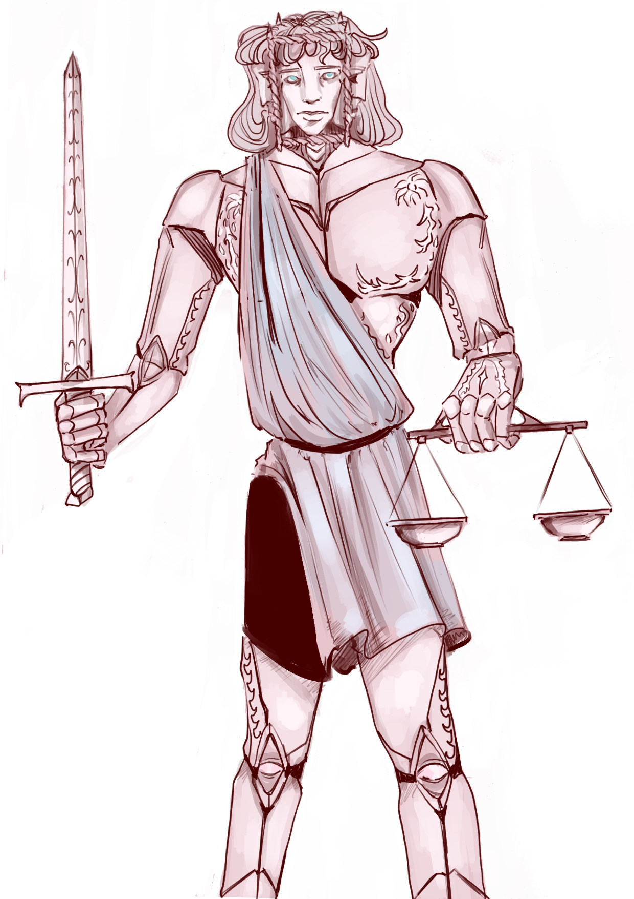

While Michael, our pride and joy, our executioner and soldier, may come off as noble, he is pretty cold and cruel. Nothing can sway his heart if the verdict has been given, not a mother's tears, not a child's innocence.
His robotic heart pumps his veins full of hatred and even if he has come from the same mold as Valentine, and even if they are considered twins, he lacks his brother's gentle grace and love for others.
His wings are made of wires that plug him into the Library and he just so happens to always know where everyone and everything is. Who's to say he isn't watching you right now?
Micheal thinks so little both of humankind and of Robots, his own minions, that you are left to wonder if he even loves his own brethren. If he feels any love for our Judge, our beloved Highest Power.
Or is the praise he sings as he swings his sword a lie? And what did he do to deserve being an "arch"?